zju3dv/InfiniSplat 的 InfiniSplat_v2/ 目录),已开源——注意库内综述 前馈式高斯重建 2026 下半年调研 写作时(2026-10-15)代码尚未放出,其"代码/权重链接原文未给出"的记述已被本笔记过时化。一句话概括:前馈式 3DGS 直接从输入图像构建可渲染场景,但在预测几何之上学习 Gaussian 属性、并在大视角变化下保持渲染质量仍然困难。InfiniSplat v2 把它拆成三个可独立验证的问题并各给一剂药:① 冻结几何分支(DA3 权重,几何与属性预测解耦,阻断"移动点位置补偿属性误差"的退化通路);② 训练时用尺度对齐的 GT 相机位姿反投影(Umeyama 只取尺度),消除预测位姿误差引入的相机诱导残差;③ 大角度目标视角监督(按目标光轴与输入光轴最小夹角排序分池,0.7/0.3 概率采样),让 Gaussian 形状在多方向投影下被充分约束。同一训练模型同时覆盖 pose-conditioned 与 pose-free 两种设置。
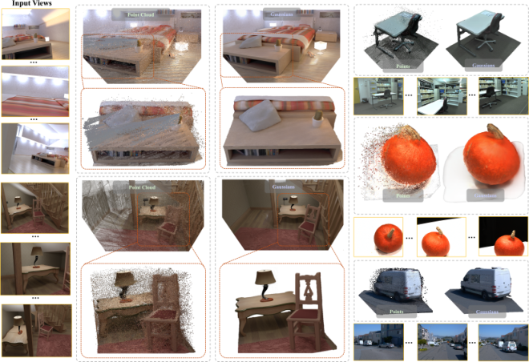
前馈 Gaussian 重建(pixelSplat → MVSplat → GS-LRM → NoPoSplat → DA3-GS / AnySplat / WorldMirror 一脉)已经能从若干张图直接吐出 3DGS 场景。几何基础模型(DUSt3R / MASt3R / VGGT / DA3)提供的深度+相机预测,经反投影就是一个"整体几何连贯、但含跨视角不一致漂浮簇"的点云(图 1)。问题不在几何够不够好的绝对水平,而在:属性学习环节会反过来被几何噪声带歪,或反过来去"修"几何、越修越坏。
DA3-GS 这类方法让几何 backbone 与 Gaussian head 一起被渲染损失驱动。作者的分析(§3.2、消融表 2 w/o G)发现:联合优化时,网络会移动点位置去补偿属性误差——渲染指标短期变好,几何却退化(深度畸变、结构漂移)。冻结几何分支后 ETH3D LPIPS 从 0.5204 降到 0.4339(-16.6%)、DTU 从 0.2695 降到 0.2070(-23.2%)。
若训练时用预测相机反投影建点、却用 GT 目标视角监督渲染,位姿误差会直接变成监督信号里的系统性错位(§3.2)。消融 w/o C(训练改用预测相机)在 DTU 上 LPIPS 从 0.2070 恶化到 0.3237(-36.1% 的差距)。这是"同一模型既要 pose-free 又要 pose-conditioned"时最容易踩的坑。
若目标视角总在输入视角附近(local sampling,最小夹角均值仅 12.34°),Gaussian 的 scale/rotation 只在一个方向被投影约束,大角度外推时形状露馅(模糊、拖影)。换大角度监督(均值 17.97°)后,消融显示 ETH3D/DTU 双指标同步改善(§4.3, w/o V 对照)。
v1 是单图前馈 3DGS:几何引导的 support 采样 + query 条件隐式 Gaussian 解码,主打大基线单目新视角合成。v2 转为任意多视角(N=4~16 评测,训练中 N∈{4,...,12}),放弃了 v1 的隐式解码路线,改为"DA3 冻结几何 + DPT 属性头 + 学习式 refinement"——两者共享"让 Gaussian 排布贴合几何而非像素网格"的思想,但 v2 更激进:位置直接锁死为几何模型输出,只做属性学习。v2 作者与 v1 高度重合(前三作者 Yongzhen Hu / Hao Yu / Jiawei Wang 均为 v1 作者,机构从 UDeer.ai 换成 Hello TransTech)。
| 符号 | 含义 | 形状/取值 |
|---|---|---|
| $\mathcal{C}$ / $\mathcal{T}$ | 输入视角集合 / 采样目标视角集合 | $|\mathcal{T}|=4$(训练) |
| $\bm{\mu}_m$ / $\bm{\xi}_m$ | Gaussian 中心 / 属性包 | $\mathbb{R}^3$ / $(\alpha,\mathbf{s},\mathbf{q},\mathbf{c})$ |
| $\Phi_{\mathrm{geo}}$ / $\Phi_{\mathrm{attr}}$ | 冻结几何分支 / 可训属性分支(同以 DA3NESTED-GIANT-LARGE-1.1 初始化) | 属性分支只微调最后 $K{=}10$ 个 Transformer block |
| $\widehat{D}_i$, $\widehat{\bm{\Pi}}_i$ | 预测深度与相机(几何分支输出,式 2) | 逐像素深度图;$(\mathbf{K},\mathbf{P})$ |
| $s_{\mathrm{norm}}$ | Mean Radial Distance 归一化尺度(式 3) | 标量,全部反投影点的径向距离均值 |
| $s_{\mathcal{C}}$ | Umeyama 从 GT 输入相机中心到归一化预测相机中心拟合出的尺度 | 标量;旋转保持 GT,平移 $\widetilde{\mathbf{t}}^{\star}=s_{\mathcal{C}}\mathbf{t}^{\star}$ |
| $\bar{D}_i$ | 尺度归一化深度 $\widehat{D}_i/s_{\mathrm{norm}}$ | 同 $\widehat{D}_i$ |
| $a(v,\mathcal{C})$ | 候选目标 $v$ 与输入集的最小光轴夹角(式 5) | $\min_i \arccos(\mathbf{f}_v^\top\mathbf{f}_i)$ |
| $\mathcal{G}^0$ / $\mathcal{G}^{\mathrm{ref}}$ | 体素合并+opacity 剪枝后的初始场景 / refinement 后场景 | 体素边长 0.004;$\tau_\alpha=0.01$ |
| $E$, $U$ | refiner 的反馈编码器 / 共享循环 KNN Transformer 更新器 | 8 邻域单头注意力 ×4 block;隐藏态 16 维 |
| $K_{\mathrm{r}}$ | refinement 步数 | 训练均匀采样 $\{1,2,3\}$,推理 3 步 |
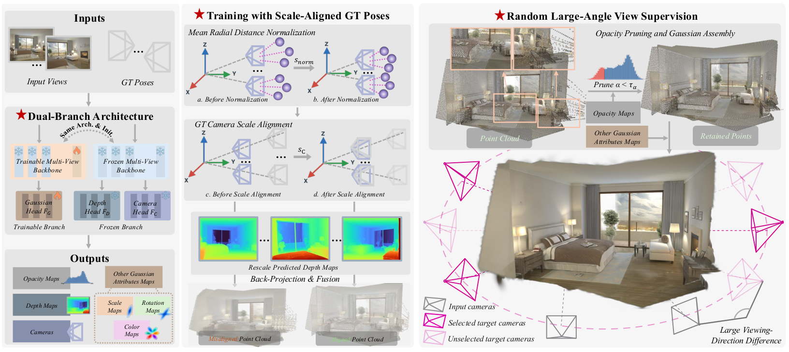
与前作范式的差异一句话:DA3-GS 是"一个网络联合出几何+属性",v2 是"几何全信(但冻结、且位置钉死)、属性全学(含一个显式吃渲染梯度的循环精修器)";AnySplat/WorldMirror 2.0 借走体素合并策略,但 v2 的 GT 位姿尺度对齐与大角度监督是它独有的训练侧设计。
| 组件 | 结构 | 输入 → 输出 | 出处 |
|---|---|---|---|
| 几何分支 $\Phi_{\mathrm{geo}}$ | DA3 backbone(ByteDance-Seed Depth-Anything-3,git 钉死 commit 41736238)+ depth/camera heads | 图像 $[B,3,H,W]$ → 深度 $\widehat{D}$、相机 $\widehat{\bm{\Pi}}$ | model.py:27-28,INSTALL.md:34 |
| 属性分支 $\Phi_{\mathrm{attr}}$ | 同一 DA3 权重独立初始化的第二个 backbone(self.appearance);论文:只微调最后 $K{=}10$ 个 Transformer block | 图像 → 第 [19,27,33,39] 层 token,各经 Linear(1536,2048) | model.py:41,125 |
| GSFeatHead(DPT 风格) | dim_in=2048,features=256,四级通道 [256,512,1024,1024] + 4 个 refinenet;output_conv1 降到 128 通道;RGB 经 3 层 Conv(3→32→64→128)+GELU 的 input_merger 与 DPT 特征相加;UV 正余弦位置编码强度 0.1 | patch token → 128 通道稠密特征图 | decoder.py:172-268,model.py:13-16 |
| GaussianHead | Conv2d(128,256,3) → ReLU → Conv2d(256,11,1) | 128 通道特征 → 每像素 11 通道:rotation(4) / scale(3) / opacity(1) / SH0 颜色残差(3) | gaussians.py:10-11,17 |
gaussians.py:19-21):rotation 做 L2 归一化成单位四元数;scale 为 exp().clamp_max(0.3)(RDNorm 归一化空间硬上限 0.3);opacity 过 sigmoid;颜色是以输入 RGB 为基底、网络只预测残差的 SH0 直流项 ((rgb-0.5)/SH_C0) + sh_residual。另外确认:位置通道不存在——11 通道里没有 offset,中心 100% 来自深度反投影(model.py:203-206 → geometry.py:25-33),与论文 "without predicted positional offsets" 一致。
model.py:60-67);若只共享前若干 block,geometry 分支用 prefix_resume 从 appearance 写入的 prefix_cache 续跑(model.py:68-86,126-143)。model.py:93,99,129,145)。gs_feature_head.forward_chunk(..., i, i+1) 再过 GaussianHead——注释明示是为了"避免为每个视图驻留 128 通道稠密特征"的显存优化(model.py:195-200)。几何分支无监督(冻结)。属性分支由 Stage-I 的 masked L1 + LPIPS 重建损失监督(见 §9),只更新最后 $K{=}10$ 块与 Gaussian decoder(§A.3)。
训练时用预测相机反投影建点、用 GT 目标视角监督,位姿误差会成为相机诱导的系统性残差混进属性学习目标。v2 的做法:反投影与监督都用 GT 相机,但 GT 与预测坐标的尺度不一致,于是一边把预测深度归一化,一边把 GT 相机平移缩放到同一尺度(只做尺度对齐,不做完整 Sim(3))。
预测深度与相机平移同除 $s_{\mathrm{norm}}$(Mean Radial Distance Normalization)。再用 Umeyama 从 GT 输入相机中心拟合到归一化预测相机中心,只保留尺度 $s_{\mathcal{C}}$,GT 旋转不动、平移缩放:
记号:星号为 GT 量,波浪号为尺度对齐量;Umeyama 拟合只用输入相机中心,同一尺度施加到输入与目标相机(§A.2)。参考系为排序后第一个输入视角。
geometry.py:127-170("第一相机相对坐标系下全部反投影点半径均值")。align_rdnorm_gt_via_legacy_da3(geometry.py:172-185,调用处 model.py:163-177),内部 umeyama 尺度对齐失败时回退 fallback_pose_scale(geometry.py:86-126)——用了 evo 库的 umeyama 实现(依赖 evo>=1.30,<2,pyproject.toml:16)。voxel = median_scale × 1.4(gaussians.py:34-35,pipeline.py:82-84 的 'voxel_multiplier':1.4)——即自适应边长。两者是否数值等价(训练用固定 0.004、推理发布版改为自适应)仓库无训练代码可证,⚠️【待核实】。本模块不产生新损失,它决定用哪套相机算渲染损失。消融 w/o C(退回预测相机反投影)在 DTU 上 LPIPS 恶化 36.1%(0.2070→0.3237,表 2),是五个消融项里单点破坏力最大的之一,说明位姿-监督一致性是硬约束。
目标视角到输入视角的最小夹角均值:local sampling 12.34° → 本文策略 17.97°(图注原文)。⚠️【待核实】图 8 原图为 LaTeXML 未导出的矢量图,无位图可下载;分布的方差、统计数据集与样本数原文未给。0.7/0.3 的概率配比没有消融依据(消融只对比了"局部插值"整体替换)。
目标像素须 GT 深度 $>10^{-6}$ 且通过有效性掩码;反投影回输入视角后,须落在至少一个输入相机前方与图像界内,并满足深度一致 $|z_{\mathrm{proj}}-d_{\mathrm{src}}|\leq\max(\tau_{\mathrm{abs}},\tau_{\mathrm{rel}}d_{\mathrm{src}})$,默认 $\tau_{\mathrm{abs}}=0.03$、$\tau_{\mathrm{rel}}=0.01$(§A.1)。即大角度目标只在其"被输入视角真正看到"的区域贡献监督,防止网络为不可见区域乱编。
前馈输出 $\mathcal{G}^{0}$ 之上,挂一个学习型 refiner:把渲染损失的梯度本身当作特征喂给循环网络,学"看到这种梯度模式该怎么调属性",而不是直接做梯度下降。中心与点数全程固定($\bm{\mu}_{m}^{t+1}=\bm{\mu}_{m}^{0}$),空间 KNN 图跨步复用。
| 变体 | PSNR↑ | SSIM↑ | LPIPS↓ | DISTS↓ |
|---|---|---|---|---|
| Ours(前馈) | 16.9643 | 0.5836 | 0.4339 | 0.1661 |
| Ours + Adam(3 步, lr 0.01) | 16.9890 | 0.5864 | 0.4312 | 0.1656 |
| Ours*(learned refiner,3 步) | 17.6074 | 0.6067 | 0.4176 | 0.1631 |
learned refiner 比 Adam 三步多拿 0.62 dB PSNR(0.64 vs 0.02)——"学出来的更新方向"远好于"现场下山"。⚠️【待核实】推理侧代码未见 refiner 模块(发布包只含前馈权重导出 PLY),Ours* 权重如何交付未在仓库中体现,见 §11。
论文最有"分析味"的一段(§4.3 + §B.4):在 held-out Hypersim 验证场景上,用 GT 深度给每个点打独立于 opacity 的几何标签——"在至少两个视角违反自由空间(free space)且不贴合任何观测表面"为几何不一致点(共 36,125 个,容差 $\max(0.03\,\mathrm{m},0.01d)$,排除深度边缘);"与至少两视角一致且无自由空间违反"为表面一致点;其余 uncertain。
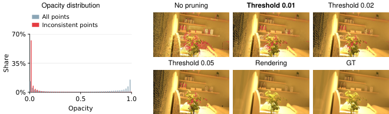
| 损失项 | 公式 | 权重(真值) | 作用 | 出处 |
|---|---|---|---|---|
| Stage-I 重建损失 $\mathcal{L}_{\mathrm{I}}$ | $\dfrac{\sum_{v}\sum_{p}M_v(p)[e_v(p)+d_v(p)]}{\max(1,\sum_{v}\sum_{p}M_v(p))}$,$e_v$ 为 masked L1,$d_v$ 为 masked LPIPS(VGG) | L1 与 LPIPS 等权 | 监督输入+大角度目标视角渲染,驱动属性分支 | 式 10-12,§A.4 |
| Stage-II 反馈损失 $\ell_{\mathrm{fb}}$ | $0.8L_1+0.2L_{\mathrm{DSSIM}}$,$L_{\mathrm{DSSIM}}=(1-\mathrm{SSIM})/2$ | 0.8 / 0.2 | 产生 RenderGrad 反馈信号(只用输入视角),梯度归一化+detach 后送入 updater | 式 13,§A.5 |
| Stage-II 外层监督 $\ell_{\mathrm{out}}$ | $0.8L_1+0.2L_{\mathrm{DSSIM}}+0.5L_{\mathrm{LPIPS}}$,输入组/目标组各 0.5 组内等权 | 0.8 / 0.2 / 0.5 | 监督更新后场景的最终渲染质量 | 式 14 |
| 多步目标 $\mathcal{L}_{\mathrm{II}}$ | $\sum_{k=1}^{K_r}0.9^{K_r-k}\mathcal{L}_{\mathrm{render}}^{k}+0.1\mathcal{L}_{\mathrm{opacity}}$ | 步衰减 0.9(不归一化);opacity 正则 0.1 | 鼓励每步都改进而非只改最后一步;防 opacity 漂移 | 式 15-16 |
| 一阶替代损失 $\mathcal{L}_{\mathrm{proxy}}$ | $\operatorname{sg}(\mathcal{L}_{\mathrm{render}}(z^k))+\langle x^k-\operatorname{sg}(x^k),r^k\rangle$,$r^k=\operatorname{sg}(\nabla_z\mathcal{L}_{\mathrm{render}}(z^k))$ | — | 数值等于渲染损失但只产生一阶梯度,避开穿过渲染器的二阶微分 | 式 17-18 |
INSTALL.md:3-4)。即公开权重只能复现表 1 的 "Ours" 行,"Ours*" 的三步精修不在发布物内。zju3dv/InfiniSplat 的 InfiniSplat_v2/(pyproject 版本 2.0.0)全目录无任何训练入口、损失、优化器、评估脚本或训练配置;result.json 元数据自述 "Interactive reconstruction; not a formal benchmark acceptance record."(pipeline.py:137-138)。因此:训练侧超参(学习率/步数/损失权重/采样概率等)只能引论文附录 §A,无法源码验证;推理侧结构均有 file:line 佐证。
| 项 | 值 | 备注 |
|---|---|---|
| 硬件 / 优化器 | 16 × H20,AdamW, $\beta=(0.9,0.95)$,global batch 16,梯度裁剪 1.0 | 两阶段相同 |
| Stage I | 25,000 步;属性 backbone 峰值 lr $10^{-6}$、Gaussian head lr $2\times10^{-4}$;2,000 步线性 warmup + cosine 衰减到 0.1×;约 48 小时 | 只训最后 10 块 + head |
| Stage II | 5,000 步;lr $2\times10^{-4}$ 无 warmup,cosine 到 0.1×;约 13 小时 | 冻结 reconstructor |
| 训练数据 | Hypersim / Raw3D / ScanNet++ = 60% / 10% / 30% | Raw3D 为 Rawmantic 公司数据,公开性【待核实】 |
| 输入规格 | $N\in\{4,...,12\}$,长边 1022(N≤8)/756(N=9,10)/518(N=11,12) | 每样本 4 目标视角 |
file:line)41736238f5bced4debf3f2a12375d2466874866d("this release uses its network internals",INSTALL.md:34,39-40);THIRD_PARTY.md 主动澄清无 VGGT/Mirror 骨干。gaussians.py:10-21;scale exp().clamp_max(0.3);颜色以输入 RGB 为基底预测残差。depth_to_world_coords_points(model.py:203-206,geometry.py:25-33)。pipeline.py:82-85 硬校验):normalization=mean_predicted_point_radius、merge=uniform_mean、voxel_multiplier=1.4、opacity_threshold=0.01、eps2d=0.01。cli.py:16,21-22;pipeline.py:28-35,48-55);视角数 2–50(CLI 默认 32 / API 默认 12,cli.py:17;pipeline.py:24-27,99)。model.py:93,99,129,145);逐视图分块解码省显存(model.py:195-200)。model.py:43-86,126-143;da3_order.py:64-66);权重文件内 tensor 别名无损去重(weights.py:1-12)。provided(自带 GT 相机)/ colmap(scripts/prepare_colmap.py 跑 COLMAP,只收 PINHOLE/SIMPLE_PINHOLE)/ da3-pose(DA3 相机头先测相机并预检正焦距,model.py:88-106;pipeline.py:121-126);另有全景 CLI 切 24 视(3 pitch × 8 yaw,FOV 60°)。export.py:21-30)+ cameras.npz;可视化靠外部 @playcanvas/splat-transform@2.6.0 转 HTML,仓库内无渲染器。| 项 | 值 | 出处 |
|---|---|---|
| 前馈延迟(单 H20,8 视角) | 1022×756:5.619 s;756×560:2.533 s;504×378:1.032 s;378×280:0.564 s | 论文表 9(1 warmup + 5 次 CUDA-event 计时) |
| 训练时长 | Stage I 约 48h + Stage II 约 13h(16×H20) | 论文 §A.3 |
| 环境 | Python 3.10–3.12;实测组合 torch 2.7.1(cu128)+ H20 + 驱动 570 | INSTALL.md:22-28,pyproject.toml:11 |
| 权重 | HF Edisoneh/InfiniSplat-v2(公开免登录,含 DA3 backbone,SHA256 校验);v1 权重与 v2 不兼容 | INSTALL.md:52-61,83-86 |
| DA3 backbone 规模 | DA3NESTED-GIANT-LARGE-1.1(token 维 1536,由 Linear(1536,2048) 投影反推) | 论文 §A.2 + model.py:41 |
INSTALL.md:3-4),要渲染/评测需自接光栅化器;论文训练用 gsplat(eps2d=$10^{-2}$)与此一致但代码未含。INSTALL.md:39-40);代码对 DA3 打了两处 monkey-patch(SwiGLU 去 xformers、中层导出支持 prefix cache)。cameras.py:30-36,67-73)——鱼眼/广角需先自行去畸变。协议:六数据集(DL3DV / ETH3D / NRGBD / Mip-NeRF 360 / RE10K / DTU),$N\in\{4,8,16\}$ 输入视角,每例 4 个 held-out 目标视角,所有方法同一划分;逐级等权平均(目标视角→样本→场景→视角配置→数据集)。Ours = 前馈输出,Ours* = 加三步 learned refinement。主指标 LPIPS/DISTS(沿袭 SHARP 协议),PSNR/SSIM 见附录表 3/4。
| 方法 | DL3DV | ETH3D | NRGBD | Mip360 | RE10K | DTU | Mean |
|---|---|---|---|---|---|---|---|
| tttLRM | 0.4955/0.2574 | 0.4984/0.2296 | 0.2857/0.1979 | 0.3835/0.2036 | 0.2193/0.1404 | 0.3933/0.2662 | 0.3793/0.2159 |
| DA3-GS | 0.5235/0.2138 | 0.5776/0.2443 | 0.3593/0.1557 | 0.4965/0.2390 | 0.2315/0.1263 | 0.3536/0.2000 | 0.4237/0.1965 |
| DepthSplat | 0.5766/0.2707 | 0.5615/0.2874 | 0.0867/0.0673 | 0.4504/0.2448 | 0.1297/0.0840 | 0.4263/0.2413 | 0.3718/0.1993 |
| ReSplat | 0.4198/0.2123 | 0.5266/0.2309 | 0.1204/0.0962 | 0.3655/0.1747 | 0.1191/0.0842 | 0.4485/0.2781 | 0.3333/0.1794 |
| TokenGS | 0.6911/0.3239 | 0.6704/0.2913 | 0.5589/0.3025 | 0.6456/0.3095 | 0.3955/0.2094 | 0.5057/0.3221 | 0.5779/0.2931 |
| VolSplat | 0.7049/0.3539 | 0.6715/0.3149 | 0.2342/0.1911 | 0.5071/0.2585 | 0.3552/0.1985 | 0.6424/0.3370 | 0.5192/0.2756 |
| WorldMirror 2.0 | 0.4673/0.2126 | 0.5201/0.2079 | 0.1056/0.0717 | 0.4689/0.2194 | 0.2174/0.1359 | 0.3306/0.1930 | 0.3517/0.1734 |
| Ours | 0.3363/0.1209 | 0.4339/0.1661 | 0.0653/0.0535 | 0.3206/0.1405 | 0.1202/0.0798 | 0.2070/0.1368 | 0.2472/0.1163 |
| Ours* | 0.3276/0.1197 | 0.4176/0.1631 | 0.0612/0.0524 | 0.3099/0.1380 | 0.1176/0.0802 | 0.2014/0.1422 | 0.2392/0.1159 |
| 方法 | DL3DV | ETH3D | NRGBD | Mip360 | RE10K | DTU | Mean |
|---|---|---|---|---|---|---|---|
| AnySplat | 0.5985/0.2490 | 0.5473/0.2297 | 0.1895/0.1131 | 0.5512/0.2259 | 0.2454/0.1113 | 0.4800/0.2345 | 0.4353/0.1939 |
| C3G | 0.7503/0.3694 | 0.6722/0.3471 | 0.5393/0.2708 | 0.7390/0.3878 | 0.4600/0.2145 | 0.7115/0.3704 | 0.6454/0.3267 |
| QuerySplat | 0.5601/0.2260 | 0.5805/0.2750 | 0.2586/0.1405 | 0.6076/0.2678 | 0.2158/0.1113 | 0.5199/0.2722 | 0.4571/0.2155 |
| DA3-GS | 0.5146/0.2179 | 0.4950/0.2435 | 0.3456/0.1777 | 0.4738/0.2303 | 0.2526/0.1434 | 0.4108/0.2336 | 0.4154/0.2077 |
| WorldMirror 2.0 | 0.4800/0.2148 | 0.4917/0.2310 | 0.2099/0.1556 | 0.4701/0.2169 | 0.2210/0.1323 | 0.3812/0.2106 | 0.3757/0.1935 |
| Ours | 0.3773/0.1293 | 0.4145/0.1710 | 0.1096/0.0788 | 0.3784/0.1504 | 0.1459/0.0819 | 0.3898/0.1932 | 0.3026/0.1341 |
| Ours* | 0.3698/0.1306 | 0.4020/0.1738 | 0.1033/0.0776 | 0.3788/0.1595 | 0.1445/0.0808 | 0.3835/0.2048 | 0.2970/0.1379 |
| 设置 | 方法 | PSNR↑ | SSIM↑ | LPIPS↓ | DISTS↓ |
|---|---|---|---|---|---|
| pose-free | WorldMirror 2.0(感知指标最强 baseline) | 17.0031 | 0.6089 | 0.3757 | 0.1935 |
| DA3-GS(PSNR/SSIM 最高 baseline) | 17.7144 | 0.6463 | 0.4154 | 0.2077 | |
| Ours | 18.4002 | 0.6423 | 0.3026 | 0.1341 | |
| Ours* | 18.8483 | 0.6523 | 0.2970 | 0.1379 | |
| pose-conditioned | ReSplat(PSNR/SSIM 最高 baseline) | 20.9139 | 0.7117 | 0.3333 | 0.1794 |
| Ours | 20.2824 | 0.6988 | 0.2472 | 0.1163 | |
| Ours* | 20.9334 | 0.7131 | 0.2392 | 0.1159 |
读法:pose-conditioned 下前馈 Ours 的 PSNR(20.28)仍输 ReSplat(20.91)0.63 dB,加精修才以 20.93 vs 20.91 反超 0.02 dB;LPIPS/DISTS 两项感知指标则前馈即大幅领先。pose-free 下 Ours 四项里三项第一(仅 SSIM 0.6423 略输 DA3-GS 0.6463)。SOTA 宣称仅适用于感知指标。
| 输入分辨率 | Mean (s) | Min–Max (s) |
|---|---|---|
| 1022 × 756 | 5.619 | 5.617–5.621 |
| 756 × 560 | 2.533 | 2.532–2.535 |
| 504 × 378 | 1.032 | 1.031–1.034 |
| 378 × 280 | 0.564 | 0.563–0.564 |
只测前馈网络;Ours* 三步 refinement 的延迟未报告——落地评估的缺口。计时为同一 ETH3D 场景 1 warmup + 5 次 CUDA-event,min–max 极窄说明稳定但场景单一。
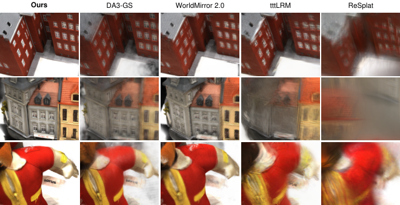
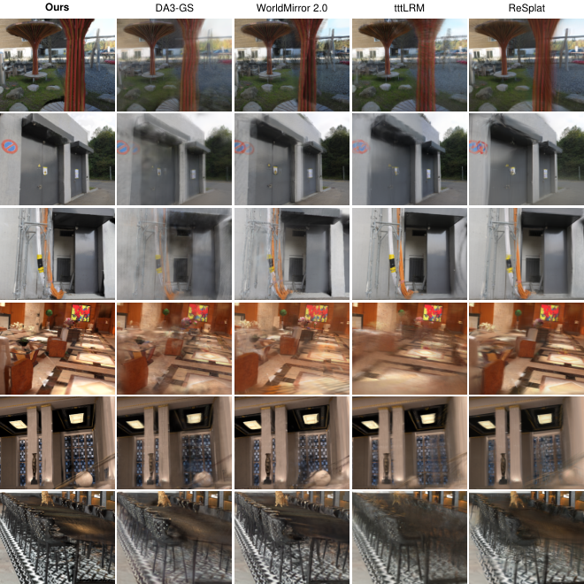
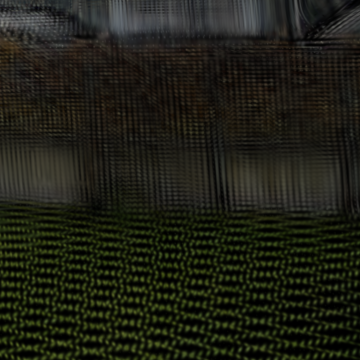
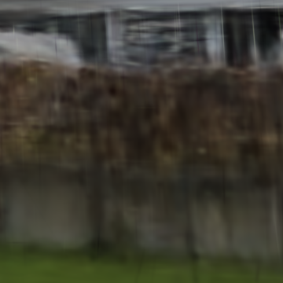
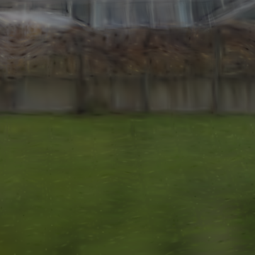
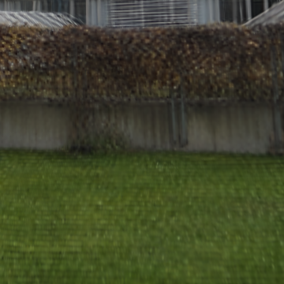
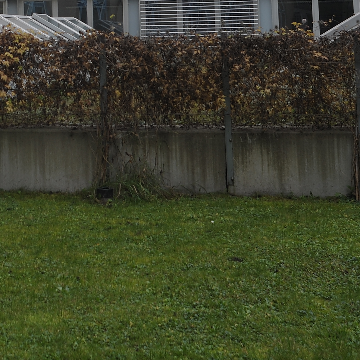
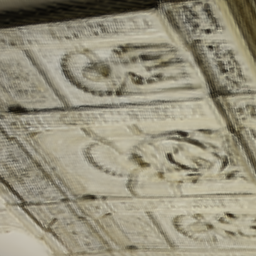
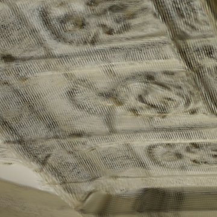
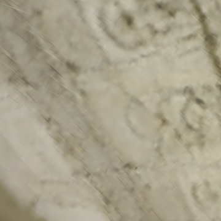
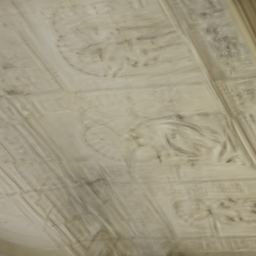
论文表 2(ETH3D / DTU,前馈输出,对 N=4/8/16 平均)。变体:A=属性 backbone 微调(Ours $K{=}10$ vs w/o A $K{=}0$,冻结属性 backbone、跨分支共享特征、仅训 Gaussian head);G=几何冻结(w/o G 以 $10^{-6}$ lr 微调几何 backbone,head lr $2\times10^{-4}$);C=GT 相机反投影(w/o C 训练用预测相机);V=大角度监督(w/o V 用输入视角间局部插值视角,保留目标监督与相同掩码);O=positional offsets(几何冻结下由 Gaussian head 预测加到反投影中心上的 3D 偏移)。
| 变体 | ETH3D LPIPS↓ | ETH3D DISTS↓ | DTU LPIPS↓ | DTU DISTS↓ | 解读(手算 Δ) |
|---|---|---|---|---|---|
| Ours(完整) | 0.4339 | 0.1661 | 0.2070 | 0.1368 | — |
| w/o A($K{=}0$) | 0.4388 | 0.2019 | 0.2612 | 0.1663 | DTU LPIPS 退化 20.8%——属性 backbone 微调在域外物体集(DTU)收益最大,ETH3D 仅 1.1% |
| w/o G(微调几何) | 0.5204 | 0.1938 | 0.2695 | 0.1841 | 冻结 vs 微调:ETH3D LPIPS -16.6%、DTU -23.2%(论文原文数字,手算 16.65%/23.19% ✓) |
| w/ O(加 offset) | 0.4998 | 0.2082 | 0.2826 | 0.1887 | 重开位置补偿旁路,全面变差;DISTS 损失为六项最大 |
| w/o C(预测相机反投影) | 0.5017 | 0.1863 | 0.3237 | 0.1758 | DTU LPIPS 恶化 36.1%(0.2070→0.3237,论文原文数字 ✓)——位姿-监督一致性是硬约束 |
| w/o V(局部视角监督) | 0.4533 | 0.1763 | 0.2295 | 0.1508 | 双数据集 LPIPS/DISTS 同步退化,幅度小于前三者 |
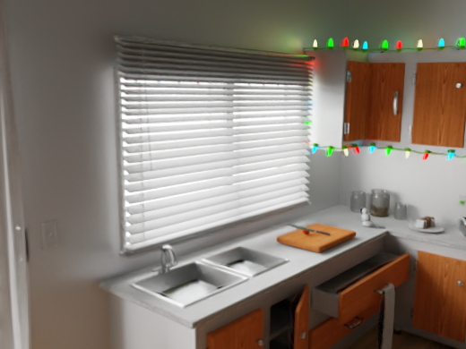
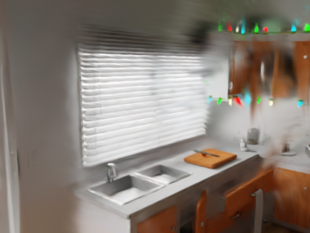
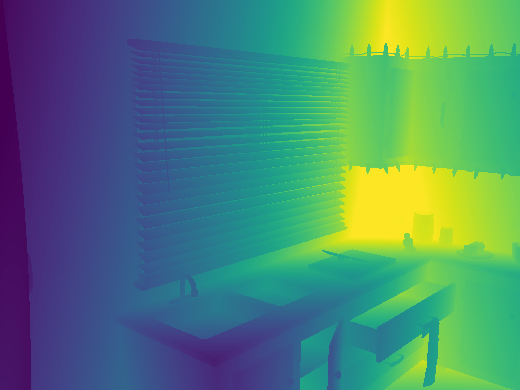
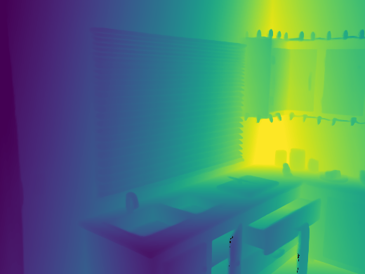
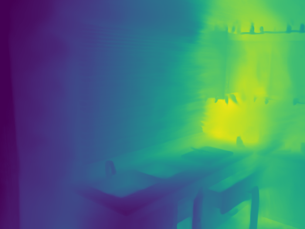
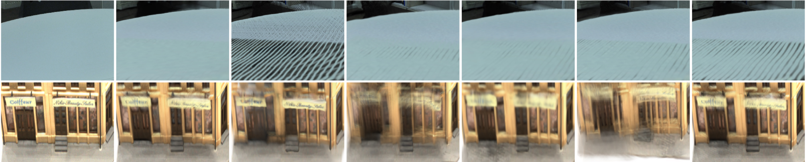
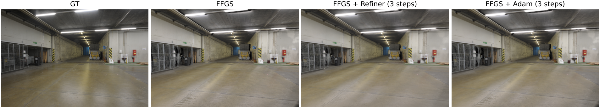
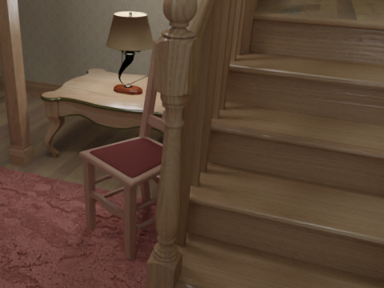
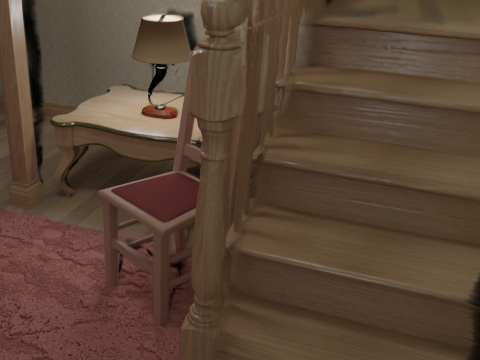
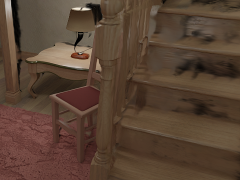
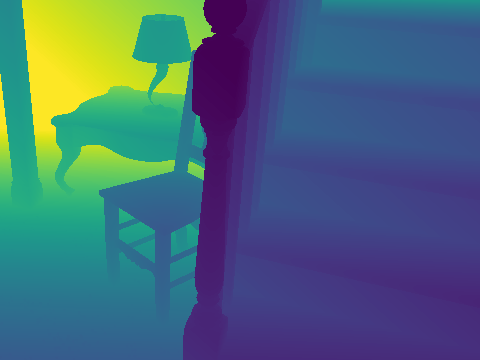
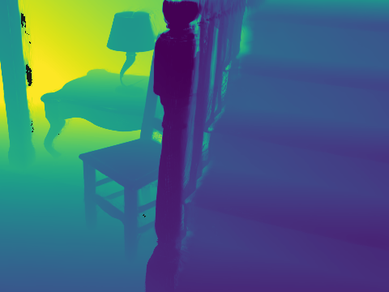
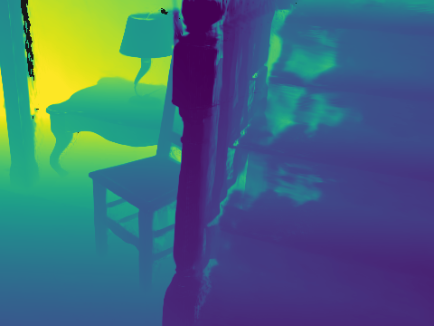
| 方法 | 年份 | 输入假设 | 场景表示 | 监督信号 | 训练数据 | 训练时长 | 推理耗时 | 显存 | 关键指标 | 开源 |
|---|---|---|---|---|---|---|---|---|---|---|
| InfiniSplat v2 | 2026.10 | 任意 N 视角,位姿可选(双模式) | 位置钉死的 3DGS(SH0) | masked L1+LPIPS(+DSSIM),GT 深度 warp mask | Hypersim+Raw3D(私有)+ScanNet++ | 约 61h @16×H20 | 0.56–5.6 s @H20(表 9) | —(逐视图分块+prefix cache 优化) | pose-cond LPIPS 0.2472 / DISTS 0.1163(6 集均值) | 推理代码+权重;训练闭源 |
| DA3-GS | 2025 | 任意视角,DA3 几何 | 像素对齐 3DGS | 渲染监督(几何+属性联合) | — | — | — | — | pose-free LPIPS 0.4154 | ✅(DA3 系) |
| AnySplat | 2025 | 无位姿任意视角 | 前馈 3DGS | 渲染监督 | 大规模多数据集 | — | — | — | pose-free LPIPS 0.4353 | ✅ |
| WorldMirror 2.0(Hy-World 2.0) | 2026 | any-prior prompting,位姿可选 | 前馈 3DGS | 渲染监督 | — | — | — | — | pose-free LPIPS 0.3757 / DISTS 0.1935 | 部分 |
| ReSplat | 2025 | 稀疏位姿视角 | 前馈 3DGS | 特征空间渲染误差驱动循环精修 | — | — | — | — | pose-cond LPIPS 0.3333;PSNR 20.9139(全场最高) | ✅ |
| DepthSplat | 2025 | 稀疏位姿视角 | 像素对齐 3DGS | 单目深度先验+渲染监督 | ScanNet/RE10K 等 | — | — | — | pose-cond LPIPS 0.3718 | ✅ |
| SHARP | 2025.12 | 单图 | 前馈 3DGS | 渲染监督 | — | — | 单图秒级 | — | 单图 NVS 基准制定者(LPIPS/DISTS 协议来源) | ✅ |
| InfiniSplat v1 | 2026.08 | 单图 | 表面对齐 support + 隐式解码 3DGS | 渲染监督 | Hypersim(零样本泛化到开放场景) | — | — | — | 大基线单目 NVS SOTA(SIGGRAPH Asia 2026) | ✅(同仓 v1 目录) |
baseline 列的"训练时长/推理耗时/显存"原文未报告,按规范写 —;关键指标列取论文表 1/3/4 的六数据集均值(与本文同协议,可直接比)。库内兄弟笔记:ReSplat、SHARP、VGGT(几何骨干谱系)、前馈式高斯重建 2026 下半年调研(谱系全景)。
| 范式 | 代表方法 | 核心先验 | 局限 |
|---|---|---|---|
| 像素对齐回归 | pixelSplat → MVSplat → DepthSplat | 极线几何 / 代价体 | 绑定像素网格,大角度外推碎裂 |
| 大模型前馈 | GS-LRM → NoPoSplat → AnySplat | 海量数据学的隐式几何 | 感知指标落后于专用协议 |
| 几何基座 + 属性头 | DA3-GS → InfiniSplat v2 | 冻结的几何基础模型(DA3) | 几何错误不可修,靠 opacity 吸收 |
| 生成式/循环精修 | ReSplat、G3R、Flux4D、v2 Stage II | 渲染反馈作为可学习信号 | 精修延迟与收益未充分解耦报告 |
| 单图大基线 | Flash3D → SHARP → InfiniSplat v1 | 单目几何先验 + 表面对齐 | 单图信息瓶颈,难覆盖遮挡区 |
定位一句话:v2 是"几何基座 + 属性头"范式的训练协议极化版——它证明了在这条线上,剩余提升空间主要不在更大的模型,而在切断错误梯度通路(冻结)、对齐监督坐标系(GT 位姿)、加密监督视角分布(大角度)这三件"不要钱"的事,外加一个"把渲染梯度当特征"的精修器作为可选增益。
infinisplat),输入 2–50 张图 + 可选 COLMAP/GT 相机,输出 SH0 PLY——与我们 COLMAP → 3DGS 链路的接口完全对齐,可作为稀疏视角下的 scene_gs 初始化方案做 A/B 对比(对比现行 COLMAP 点云初始化)。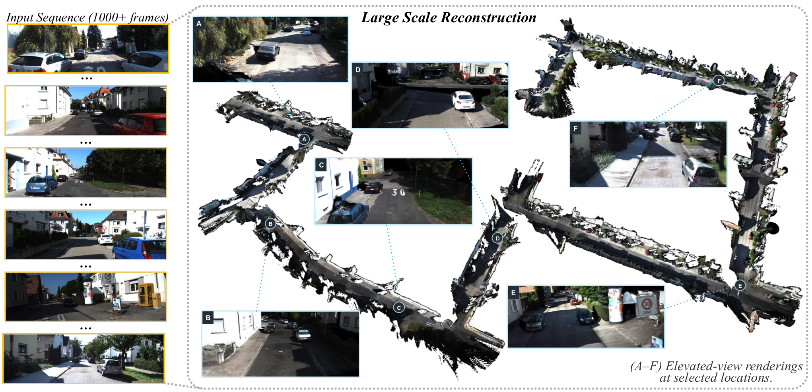
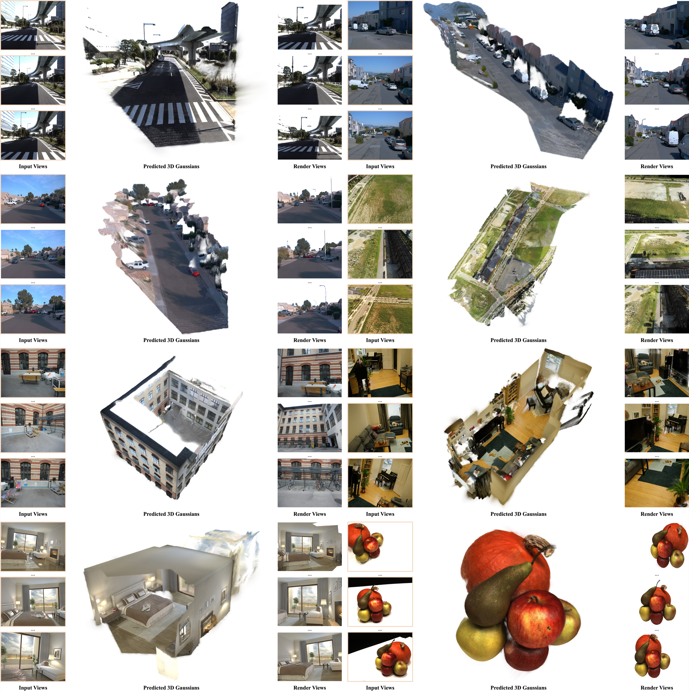
| 项 | 成本 | 说明 |
|---|---|---|
| 推理 | 0.5–6 s/场景(分辨率相关) | 论文表 9;refinement 成本未报告 |
| 复现训练 | 不可行 | 无训练代码 + Raw3D 私有 + DA3 具体权重版本获取途径未给 |
| 微调/二次开发 | 高 | 只有推理包,改动空间限于后处理(PLY 清洗/压缩) |
| 商用许可 | 见仓库 LICENSE【待核实】 | HF 权重许可需单独确认 |
问题:附录 C 自认——opacity 吸收只能压低不可靠点的贡献,不能纠正严重几何错误;预测深度错得离谱的区域(薄结构、反光、无纹理)在渲染中仍表现为缺洞/雾团。代码佐证:位置 100% 来自深度反投影(model.py:203-206),11 通道头里没有任何位置自由度(gaussians.py:10-21)。改进建议:在"完全冻结"与"自由 offset"之间找中间态——例如只允许沿视线方向的 1 自由度深度残差、或给 offset 加置信门控(w/ O 消融证明全开 offset 有害,但零自由度同样锁死了上限);更根本的是接更强几何先验(论文 C 节亦指向此)。
问题:逐像素预测 + 体素合并(推理契约 voxel=median_scale×1.4,gaussians.py:34-35)仍残留冗余(附录 C),Gaussian 数量随输入视角数线性膨胀;SH 只有零阶(代码确认 export.py:21-30 只导 f_dc),视角相关外观(高光)无表达能力。改进建议:合并后做重要度驱动的二次剪枝/聚类;或借鉴 v1 的表面对齐 support 思路做自适应密度;升级到 1–2 阶 SH 评估代价收益。
问题:训练 $N\in\{4,...,12\}$(§A.1),评测却含 $N=16$(§4.1),超出训练分布;Fig.12/13 的 12–64 视角、KITTI 1000+ 帧更只有定性展示。改进建议:补 N=16 的分布外泛化分析;大场景给出定量(哪怕是自一致的 re-rendering 指标)。
问题:表 9 只报前馈延迟;Ours* 的三步 refinement(含每步 RenderGrad 重算 + KNN 图查询)延迟、显存均未报,而表 1 中 Ours* 才是多项指标的最优行。改进建议:补 refinement 的耗时/显存表;公开 refiner 权重与代码(当前发布包完全没有,见 §10/§11)。
问题:51.8%/7.5%/93.3% 的漂亮数字只在 Hypersim(合成室内)验证集上统计,且 $\tau_\alpha=0.01$ 恰好等于训练剪枝阈值,有循环论证嫌疑(§7 清单第 7/8 条)。改进建议:在真实数据集(ETH3D/DTU 的 GT 深度)上重跑该诊断;扫阈值敏感性曲线而非单点。
问题:两阶段训练都用 GT 位姿条件(§A.3),pose-free 推理却用预测相机——train/test 条件错配未单独消融;同时 Stage I 两个学习率差三个数量级($10^{-6}$ vs $2\times10^{-4}$)依据未说明。改进建议:补 pose-free 条件下的训练消融;公开超参选取过程。
| 优先级 | 改进点 | 预期收益 |
|---|---|---|
| 高 | ① 几何硬伤的修复通路(受限位置自由度) | 补齐固定中心策略的上限 |
| 高 | ② 表示效率(剪枝/SH 升阶) | 降存储与渲染成本 |
| 中 | ③ 评测分布对齐 ④ refinement 成本透明化 ⑤ 诊断泛化验证 | 结论可信度与可落地性 |
| 低 | ⑥ 训练协议一致性消融 | 理解双模式差距来源 |
InfiniSplat v2 用三个"训练侧手术"把 DA3 系前馈 3DGS 的感知指标推了一大步:冻结几何分支(阻断位置补偿属性的退化通路,单此项带来 16.6–23.2% LPIPS 改善)、GT 位姿尺度对齐(消除相机诱导残差,DTU 上避免 36.1% 的退化)、大角度目标监督(最小光轴角均值 12.34°→17.97°,形状参数被多方向钉死)。配套的 opacity 诊断发现——纯重建监督下 opacity 自学会抑制几何不一致点(0.01 剪枝命中 51.8% 坏点、仅伤 7.5% 总点)——为"位置钉死"策略提供了自洽的闭环。
它的代价与边界同样清晰:PSNR 上并非全面 SOTA(前馈输 ReSplat 0.63 dB);三步 learned refinement(Ours*)的收益真实但代码与延迟均未公开;训练完全不可复现(无代码、数据含私有 Raw3D、16×H20 × 61h)。在"几何基座 + 属性头"这条范式线上,v2 的角色是把训练协议做到极致;下一步的空间在受限几何自由度(§16-①)与表示效率(§16-②),而不是更大的 backbone。